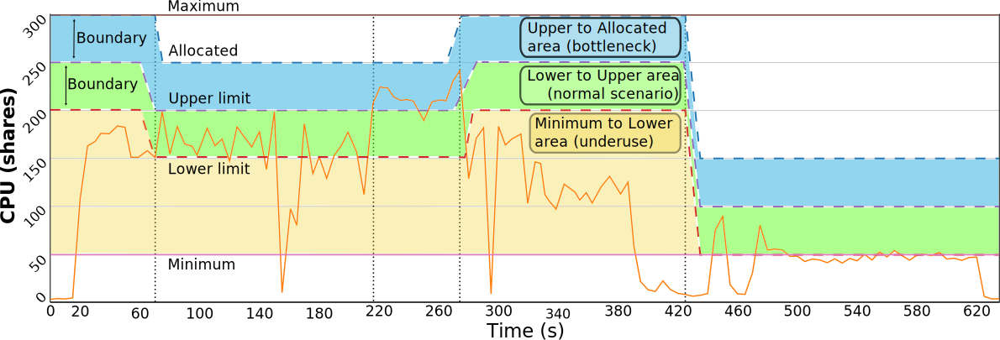
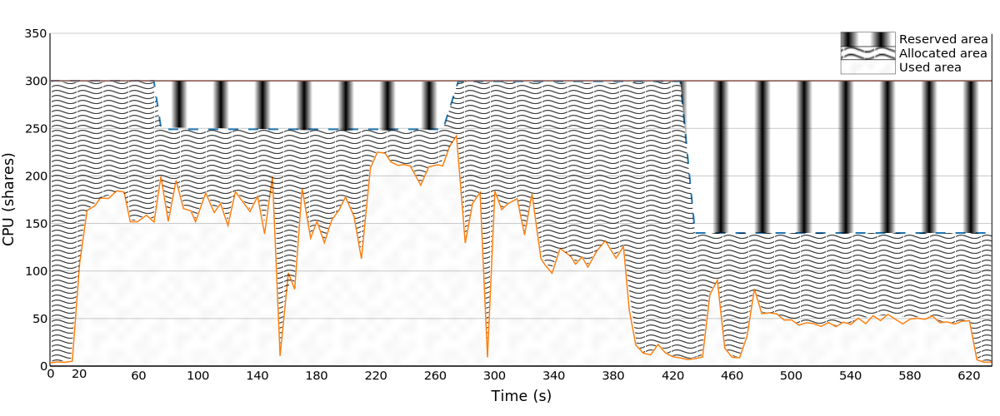

Use case
This framework is used to scale the resources of a container, or a group of containers, both dynamically and in real time, so that the limits placed on such resources evolve to be just above the usage.
On the one hand, from a traditional virtual machine and Cloud perspective, this approach is similar to the on-demand and pay per usage resource provisioning with the main difference being that on this case, the limits can be changed multiple times during execution instead of being specified only once at the instantiation phase.
On the other hand, this approach is also really close to the serverless paradigm as the container and all of the processes running on it can not trust the pool of resources exposed to them. Such resources limits can vary according to their usage (e.g., if the CPU usage increases, the CPU limit should also be raised via adding more cores).
Combining both of these approaches, this framework comes up with a solution so that virtual infrastructure units, such as software containers (e.g., LXC, Docker), can benefit from having a resource management that implements a serverless scenario. Among other perks, the main benefits of this framework include:
-
Higher resource efficiency, if the containers have a low resource usage, they are given a smaller set of resources, if they have a higher usage, they are given a larger set over time.
-
Pay per 'real' usage billing policy, only the used resources are considered when billing.
-
Flexibility of the containers, which are virtually highly similar to virtual machines and, thus, can be used to deploy a wide arrange of applications.
Main Goal
The main goal of this framework is to adjust the resource limit, that is, the amount of a resource that a container is given, so that such limit is not far away of the real resource usage. If such limit is way higher than the usage, we can talk of an underutilized resource scenario, while if the limit is close to the usage, there is a bottleneck.
The framework makes a best-effort to keep a balance between both scenarios, as if the allocated amount of resource is set too close to the usage, any unexpected increase will face a bottleneck, while if set too high, all of the unused amount is lost considering that in the serverless paradigm only the used resources are billed.
Scaling policy
In order to better see how the Serverless Containers framework achieves it goal, we can study an example of several scaling operations taking place on a time window.

First of all, in the image it can be appreciated that there are:
- A time series that varies (orange), this time series represents the container aggregated resource usage, in this case of CPU.
- Three varying thresholds (dashed lines), which, from top to bottom, represent the allocated resource limit*+ and the upper and lower boundaries** (more on this later).
- Three colored areas (blue, green and ochre), which represent the areas between the previously mentioned thresholds.
- Two vertical lines that do not vary, which represent the maximum and minimum resource limits.
As previously stated, the framework looks for a balance when it comes to setting an appropriate allocated resource amount, continuously responding to the resource usage variations. Such response can be seen in the several scaling operations that take place, such as at seconds 70 (down), 270 (up) and 420 (down). In order to detect the conditions that trigger these scaling requirements, two thresholds, or boundaries, are used:
- the upper boundary, which defines a threshold that, once surpassed, signals for a need to scale up the allocated resource limit to avoid any future bottleneck.
- the lower boundary, which triggers a scale down of the allocated resource amount once the usage falls beneath the boundary.
Thus, it is easy to see that if the thresholds are considered, the first and third scaling operations were caused because the resource usage fell under the lower boundary, while the second was caused because it surpassed the upper boundary.
Resource utilization
It is interesting to note how important it is to keep a balance that does not impose a bottleneck but also stays close to the real resource usage. As previously stated, the serverless paradigm differs from the Cloud IaaS paradigm in that the resource limits can be modified multiple times over time, instead of just defining such limit once at the startup.
Moreover, if we consider that the user of a serverless platform typically does not specify such resource requirements and that the billed resources are only the used ones, the task of properly scaling and setting limits becomes a crucial one which falls to the provider.
Because of these reasons it is important to define a key ratio, the resource utilization, which can be easily obtained from the amount of used and the allocated resources. The next image shows the previously used time window but with areas as the focus of the study:

We can see that there are three areas:
- The used area (dots), which represents the amount of resources used by the container.
- The allocated area (waves), representing the changing amount of resources set apart for this container via the framework and a series of scaling operations.
- The reserved area (stripes), which represents the theoretical limit of resources that the container had at any moment. It is worth noting that this area would effectively represent the resource footprint of a virtual machine.
With these areas it is easy to see that the ratio of utilization of this serverless framework would be higher than the one achieved by a virtual machine. Moreover, an ideal serverless platform, which allocates only the strictly needed resources at any moment, performing instantaneous scaling operation, would have a ratio of 100% (best-case scenario), while the ratio exposed by not performing any scaling operation, such as with the virtual machine, would be the worst-case scenario.
Configuration
It is worth to be mentioned that the framework is highly configurable, including but not limited to:
- the time it takes before a scaling operation is triggered
- the amount of resource that is increased in scaling up operations
- how wide are the ranges between boundaries
Some configuration parameters play a key role in how the framework behaves, nonetheless it would be tiresome for the reader to include all of the details on this webpage, even more considering that they have been extensively referenced and described on the full-length paper (preprint also publicly available).